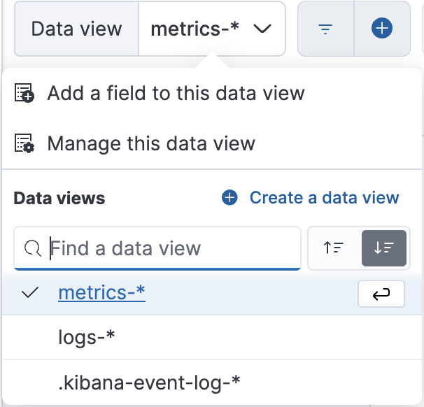
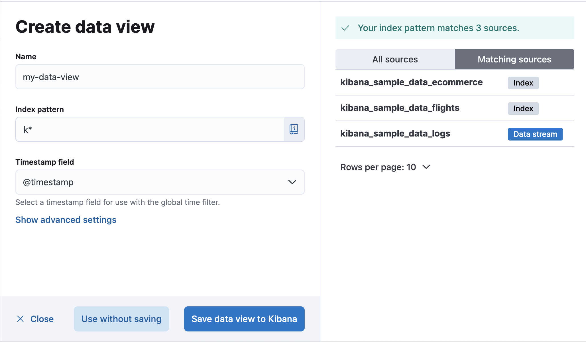

Data views
editA data view can point to one or more indices, data streams, or index aliases. For example, a data view can point to your log data from yesterday or all indices that contain your data.
Create a data view
editAfter you’ve loaded your data, follow these steps to create a data view:
-
Go to Project settings → Management → Data Views. Alternatively, go to Discover and open the data view menu.

- Click Create a data view.
- Give your data view a name.
-
Start typing in the Index pattern field, and Elastic looks for the names of indices, data streams, and aliases that match your input. You can view all available sources or only the sources that the data view targets.
-
To match multiple sources, use a wildcard (*).
filebeat-*matchesfilebeat-apache-a,filebeat-apache-b, and so on. -
To match multiple single sources, enter their names,
separated by a comma. Do not include a space after the comma.
filebeat-a,filebeat-bmatches two indices. -
To exclude a source, use a minus sign (-), for example,
-test3.
-
To match multiple sources, use a wildcard (*).
-
Open the Timestamp field dropdown, and then select the default field for filtering your data by time.
- If you don’t set a default time field, you can’t use global time filters on your dashboards. This is useful if you have multiple time fields and want to create dashboards that combine visualizations based on different timestamps.
- If your index doesn’t have time-based data, choose I don’t want to use the time filter.
-
Click Show advanced settings to:
- Display hidden and system indices.
- Specify your own data view name. For example, enter your Elasticsearch index alias name.
- Click Save data view to Elastic.
You can manage your data views in Project settings → Management → Data Views.
Create a temporary data view
editWant to explore your data or create a visualization without saving it as a data view? Select Use without saving in the Create data view form in Discover. With a temporary data view, you can add fields and create an Elasticsearch query alert, just like you would a regular data view. Your work won’t be visible to others in your space.
A temporary data view remains in your space until you change apps, or until you save it.
Temporary data views are not available in the Data Views app.
Delete a data view
editWhen you delete a data view, you cannot recover the associated field formatters, runtime fields, source filters, and field popularity data. Deleting a data view does not remove any indices or data documents from Elasticsearch.
Deleting a data view breaks all visualizations, saved searches, and other saved objects that reference the data view.
- Go to Project settings → Management → Data Views.
- Find the data view that you want to delete, and then click in the Actions column.